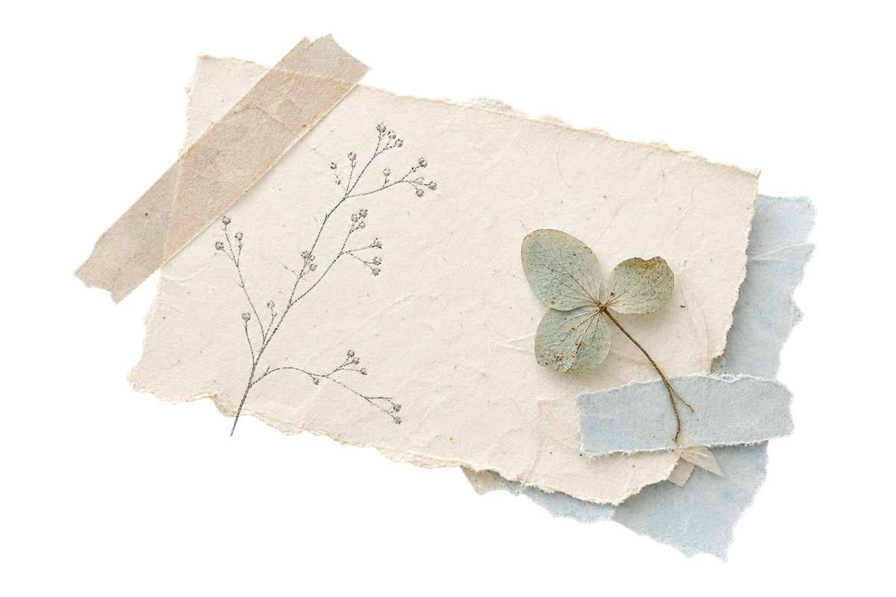

Jot what’s real
Notes, feelings, fragments, lists, and the things that do not need to become a story.
Make a page →A quiet daily journal · iPhone + iPad
A little room for today.
A gentle place for the fragments that make up a life: a thought, a photo, a line of ink, a small thing you want to keep.
No pressure. Just a little room.

The gentle rhythm
dab-dab is made for a daily practice that leaves space around the day instead of asking you to perform it.
Notes, feelings, fragments, lists, and the things that do not need to become a story.
Make a page →Bring in a photo, a small drawing, a stamp, or a paper piece when words are not enough.
See the materials →A new page is an invitation, not a demand. Your journal grows at its own pace.
Find gentle help →
A paper studio for your own life
Choose a paper tone. Add a soft note. Press in a stamp. Let the page stay a little imperfect. dab-dab keeps the decorative pieces quiet enough for your own words to remain the centre.
Explore editionsA softer way to keep a record
Explore dab-dab on iPhone or iPad. Your pages are made to stay close, with no account to maintain and a clear support path whenever you need it.